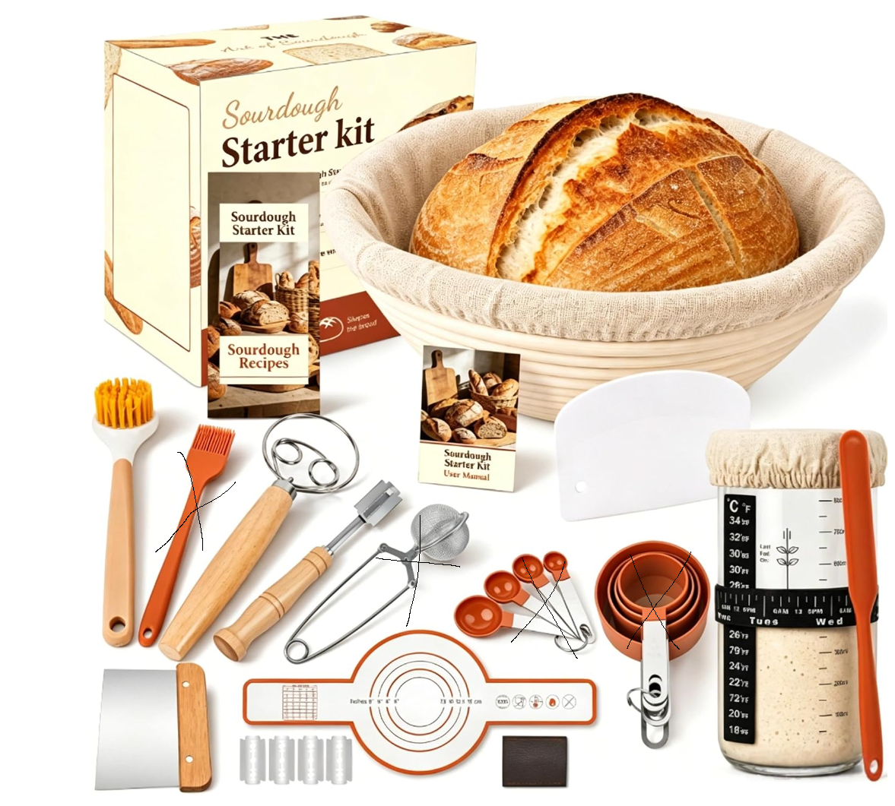
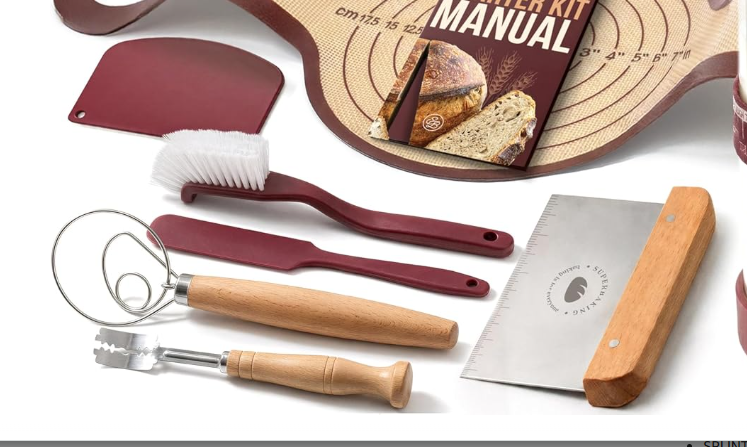

Complete tools plus starter-care support and beginner guidance.
Internal Team Resource
Premium Sourdough Bread Baking Kit
A centralized handoff for brand, product, listing, and creative teams. Use this hub to understand the product strategy, required kit components, points of parity, points of difference, and Amazon variation structure.
Default Main Variation
Classic Round + Oval Kit
Best balance of completeness, price, giftability, and Amazon competitiveness.
Needs confidence, clarity, quality, and a complete setup.
Keep ranking, reviews, PPC learning, and conversion data concentrated.
Visual Kit Contents
What the customer sees in the box
Use these references to understand the main kit pieces, supporting tools, and creative add-ons before writing listing copy or image briefs.


Document